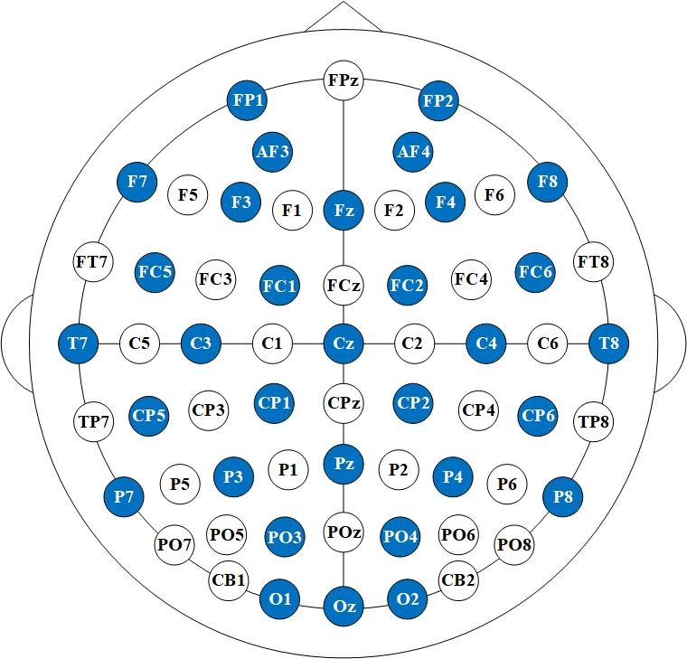

Dataset Summary
In the "Preprocss_EEG" folder, there are files containing the downsampled, preprocessed, and segmented versions of the EEG data for MATLAB. The data were resampled to 200 Hz and bandpass filtered between 0.1 to 48 Hz. We extracted segments of EEG data corresponding to the duration of each movie. Each participant is represented by a file with the extension .mat (a MATLAB file). Each participant's file contains three arrays. The array 'data' represents the preprocessed EEG data from 24 trials in the experiment (channel×data×experiment_number). The arrays 'a_label' and 'v_label' represent the corresponding affective labels for the 24 trials (with label values ranging from 0 to 9), where 'a' indicates the arousal dimension and 'v' indicates the valence dimension. The detailed order of the channels is included in the dataset. The 32-channel EEG cap according to the international 10-20 system is shown in the figure below:
illustrate
In the "Feature_EEG" folder, there are files containing the feature data for each participant. The features provided in this dataset are differential entropy features. These data are particularly suitable for those who want to quickly test classification methods without preprocessing the raw EEG data. The file format is consistent with the "Preprocss_EEG" folder.
Acknowledge
This work was supported in part by National Natural Science Foundation of China under Grant 62172139, S&T Program of Hebei Province under Grant 246Z0104G, Science Foundation Science Research Project of Hebei Province under Grant CXY2024031, Natural Science Interdisciplinary Research Program of Hebei University under Grant DXK202102.